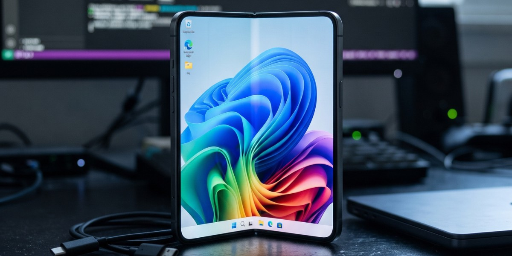

Geekotidien · Édition du 18 novembre 2026
Windows 11 sur iPhone
Un ingénieur affirme faire tourner Windows 11 sur un iPhone Duo

Selon l'article, Ammaar Reshi, ingénieur IA chez Google, a publié le 11 novembre 2026 sur X une vidéo montrant Windows 11 sur un iPhone Duo. Il dit avoir mis environ deux heures.
Il ne s'agit pas d'une installation native mais d'une machine virtuelle, issue du projet open source Henge (qui virtualise macOS sur iPhone), adaptée à Windows 11 avec Gemini. Le code est disponible sur GitHub.
La virtualisation est en principe bloquée sur l'iPhone Duo, ce qui rend la prouesse difficile. Le journaliste doute toutefois de la solidité de l'argument et y voit une publicité pour Gemini.
La rédaction ne vérifie pas les performances annoncées : l'information repose sur le message de l'auteur sur X.
Le + : Les performances annoncées n'ont pas été vérifiées par la rédaction ; le code, lui, est publié sur GitHub.